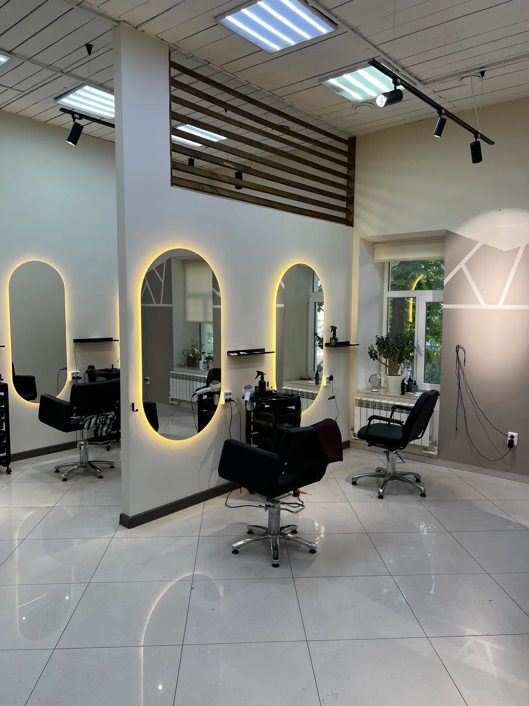
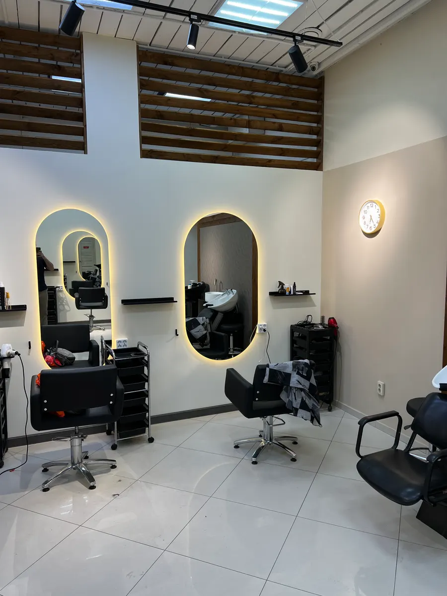
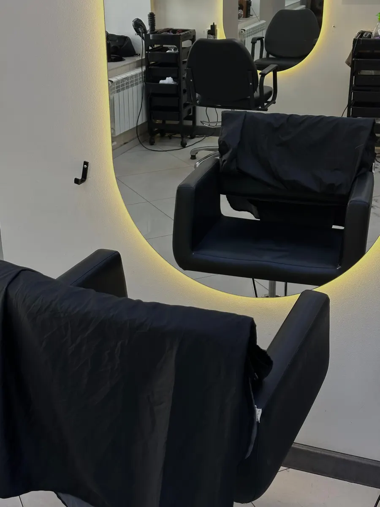
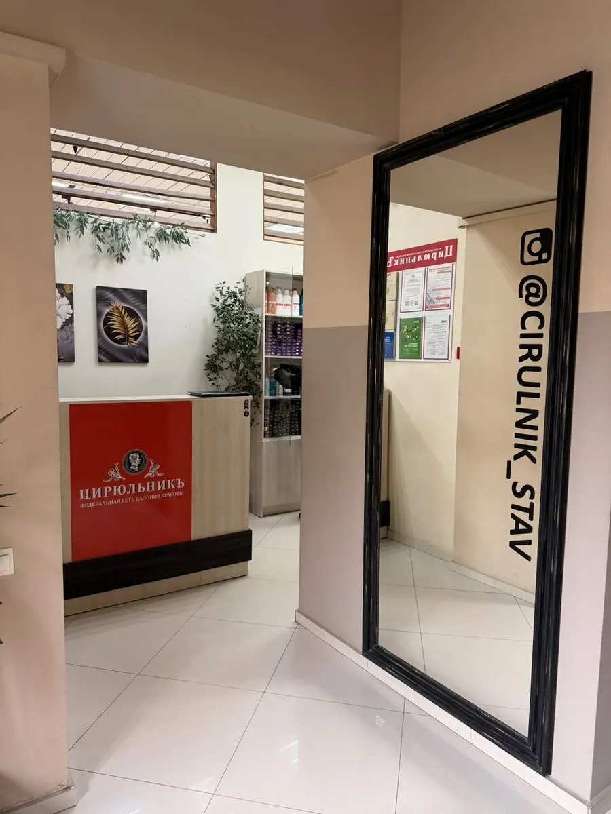

Парикмахерская и маникюр · Ставрополь
Стрижки и маникюр в Ставрополе
Выбираете услугу, день и время – запись уходит в Telegram. Мужская стрижка – 499 ₽.
- 4,8 на Яндекс Картах, 224 отзыва
- Ежедневно с 9:00 до 21:00
- Мужская стрижка – 499 ₽, без записи

Прайс ЦирюльникЪ
Цены с карточки на Яндекс Картах.
Мужские стрижки и борода
- Мужская стрижка499 ₽
- Оформление бороды449 ₽
- Моделирование бороды499 ₽
- Детская стрижка499 ₽
Женские стрижки и укладки
- Женская стрижкана короткие волосы499 ₽
- Стрижка каскад650 ₽
- Стрижка карес укладкой799 ₽
- Укладка, локоны900 ₽
- Укладка, прическа1 500 ₽
Окрашивание и уход
- Однотонное окрашивание, короткие волосыот 1 700 ₽
- Контурингот 1 500 ₽
- Мелированиеот 4 000 ₽
- Airtouch – средние волосыот 6 500 ₽
- Полировка волос900 ₽
- Химическая завивка2 000 ₽
Маникюрный зал
- Наращивание ногтей, френч2,5–3 часа2 500 ₽
- Наращивание с гель-лаком2,5–3 часа2 000 ₽
Цена окрашивания и укладок зависит от длины и густоты волос, итог называют мастера.
Как записаться
- 01
Выбираете услугу, день и время
Ниже, в форме записи: сообщение уходит в Telegram с готовым текстом.
- 02
Или пишете и звоните сами
Контакты – в конце страницы, работаем ежедневно с 9:00 до 21:00.
- 03
Приходите: улица Пушкина, 11
Адрес и карта – в конце страницы.



Что вас ждёт
Можно прийти без записи
На карточке указано: мужская стрижка – без предварительной записи, в удобное время.
Низкие цены
Мужская стрижка 499 ₽, женская на короткие волосы 499 ₽ – по карточке.
Парикмахеры и маникюр в одном месте
Есть парикмахерский и маникюрный залы.
Инструменты стерилизуют
Об этом пишут гости в отзывах.
Отзывы с Яндекс.Карт
«Зашел сделать классическую мужскую стрижку. Ожидал в живой очереди 4 минуты. Меня пригласила мастер, учла все мои пожелания. Я доволен обслуживанием и результатом. За стрижку заплатил 449 руб. Рекомендую.»
Василий Петров · 4 июня
«Очень довольна работой мастера Веры! Руки после маникюра выглядят красиво, покрытие держится идеально без отслоек. Вера настоящий профессионал, обязательно рекомендую друзьям!»
Екатерина Морозова · 20 июня
«Обслуживание топ, мастера самые лучшие особенно Кристина, персонал замечательный, стрижка понравилась, хорошо общались со мной»
ArmIt · 28 апреля
Отзывы с карточки на Яндекс.Картах, без правок.
Частые вопросы
Нужно ли записываться?
Мужскую стрижку можно сделать без предварительной записи, но можно и записаться заранее – так написано на карточке.
Сколько стоит стрижка?
Мужская – 499 ₽, женская на короткие волосы – 499 ₽, каскад – 650 ₽, каре – 799 ₽, детская – 499 ₽.
Как записаться?
Через форму на сайте (сообщение уйдёт в Telegram), в Telegram @cirulnik_stav26 или по телефону +7 (906) 489-75-34.
Где вы находитесь и когда работаете?
Ставрополь, улица Пушкина, 11, 1 этаж. Ежедневно с 9:00 до 21:00.
Запишитесь на удобное время
- Адрес
- улица Пушкина, 11, 1 этаж, Ставрополь
- Часы
- ежедневно 9:00–21:00
- Телефон
- +7 (906) 489-75-34